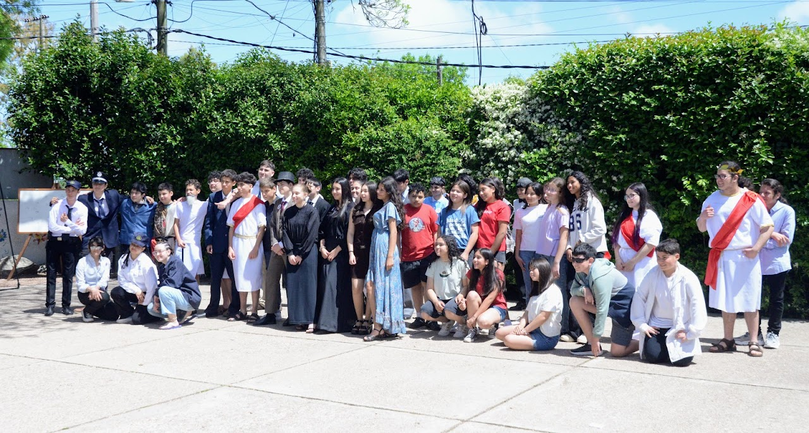

9no2, LIBB
La clase de 9no2 se integra por 11 alumnos, todos con diferentes características.
Estudiantes
Mía Curbelo
Tiene 14 años
Su comida favorita son las pastas
Ámbar Reyes
Tiene 15 años
Su comida favorita es la pasta
Belén Ramos
Tiene 14 años
Su comida favorita son los tacos
Niko Pissarouk
Tiene 15 años
Su comida favorita son los camarones
Paula Trujillo
Tiene 15 años
Su comida favorita son las croquetas de papa y la salsa rosa
Facundo Ottonello
Tiene 14 años
Su comida favorita es la sopa de mondongo
Jano Medina
Tiene 14 años
Su comida favorita es la torta de fiambre
Exequiel Ricardo
Tiene 14 años
Su comida favorita es la milanesa de pollo
Luka Pedreira
Tiene 15 años
Su comida favorita es el guiso
Lorenzo Olivera
Tiene 14 años
Su comida favorita es el guiso
Aaron Machado
Tiene 14 años
Su comida favorita es la pizza
Mundilibb 2025
Este evento se realiza todos los años desde el 2007. Consiste en que a cada grupo se le otorga una temática distinta en donde tienen que indagar información, costumbres, etc. La idea es exponer ante familias del Libb, con la infomación recaudada, souvenirs y una representación.
Experiencia de 9no2
Este año nos toco como tema Alan Thuring, un matemático científico que logro salvar miles de vidas. Sucedio en la época de los 30-40 en la segunda guerra mundial. Realizamos un stand siguiendo la tematica planteada y con el objetivo de transportar a las personas a la época.
Para lograrlo hicimos:
Aperitivos
Palitos de chocolate (simulando cigarrillos)
Carrot cake
Brownies
Galletitas bañadas en chocolates
Oreos
Bebidas
Café
Té
Guaraná
Jugo de uva
Agua saborizada
Decoración
- Paredes de TNT
- Teléfono de la época
- Vinilo
- Bandera
